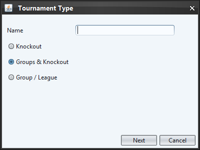
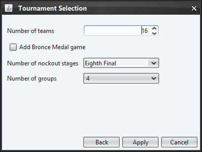

In the first dialog you can set the tournament name and choose between the tree available tournament types.

Dependent on the selection of the tournament type in the first dialog this screen can look slightly different. Besides the number of teams, this screen allows to select if the tournament should contain a bronce medal game (Game between the losers of the semi-finals).